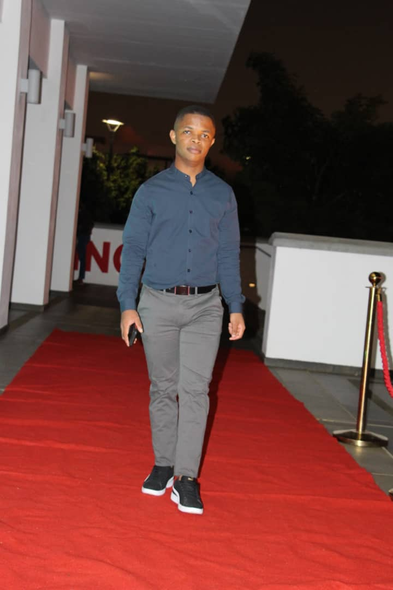

01
About Me

My name is Mangaliso Linda Dlamini (FYI, that's not the Spanish Linda. From my native language, it means
to be patient).
I am Computing student at the African Leadership College in Mauritius. I am humble, noble lad and
probably will be quietest guy in the room.
02
Background
I come from a community called Mcengeni in the Hhohho district of Eswatini. A community that stands on a
mountainous area which makes a for a great scenery especially.
Like most rural communities in the kingdom, it is survived by subsistence farming.
03
My country
Eswatini (formerly Swaziland) is Africa's last absolute monarchy, albeit, there is an ongoing political
unrest that is posing a challenge to monarchial rule.
Otherwise, the country is known for its strong cultural values and mountainous landscapes. It has some
fascinating artifacts including the second largest rock in the world,
Sibebe Rock and is home to the wildlife big five (Lion, Leopard, elephant, buffalo, rhino).
04
Before ALU
Having overachieved in rural primary schools, my parents so it fit to send me to one of the top high
schools in the country. As such I was privileged to attend Manzini Nazarene High School.
Five years later I graduated and went on to enroll at the University of Eswatini, Kwaluseni Campus.
By the time I left to join ALU, I had completed 2 years for a degree in Information Technology.
ALU Journey
I wanted to learn about ALA, ALU’s sister institution which had visited my high school a few years ago.
However, being at a tertiary institution, ALA offerings seemed a step back.
So, I randomly searched African Leadership University on google, which lead me to the ALU website. I
read their mission and vision, and few articles which had more insight in what their goals are.
All of it appealed to me. Then I hit the apply button.
The application process was an intense process. While I was itching to be part of ALU and its mission,
it seemed remote that I would making cut, and moreover be awarded a scholarship.
So, at every stage of the application I was used to say to myself how far can I go beyond. Amazingly, I
went all the way.
While the stars looked to be aligning, coronavirus was making rounds across the world. Lockdowns in my
home country made it difficult to get certain documents which were required particularly for visa
application.
And travel restriction, in Mauritius caused a delay from a September start date to a January start date.
Life At ALU
While the stars looked to be aligning, coronavirus was making rounds across the world. Lockdowns in my
home country made it difficult to get certain documents which were required particularly for visa
application.
And travel restriction, in Mauritius caused a delay from a September start date to a January start date.
ALU classes were different than what I had experienced before. They were longer than the classes from my
former university. However, the have activities such group discussion and class discussions
which made them more engaging and interactive.
I would advice prospective students that the ALU journey will often seem different and very intense even
with the application process, but it very much worth it.
 05
05
Social Life
I love my sports except for American sports, I am still struggling to understand most of them. Though I have never played for official teams, I have had the chance to try football, volleyball and cricket.
I am no party boy hence a Friday night in is often better than a Friday night out.
06
Life In Mauritius
Mauritius is a beautiful island country that is famous for its natural riches and great culture. However, I do not admire the taste and smell of their food because I am already used to typical Nigerian dishes so it was very difficult to cope.
Because of the struggle I had with eating and studies, I reached out to the student life and wellness team. It was them that gave me the strategies to manage my academics and prepare my own meal with the available foodstuff in the country.
07
Ideas For the Future & Careers

The idea is to either go for a masters in Cybersecurity or to work towards earning professional ethical hacking certificates.
The aim is to use the knowledge and experience to create and strength cybersecurity frameworks and policies in my country.